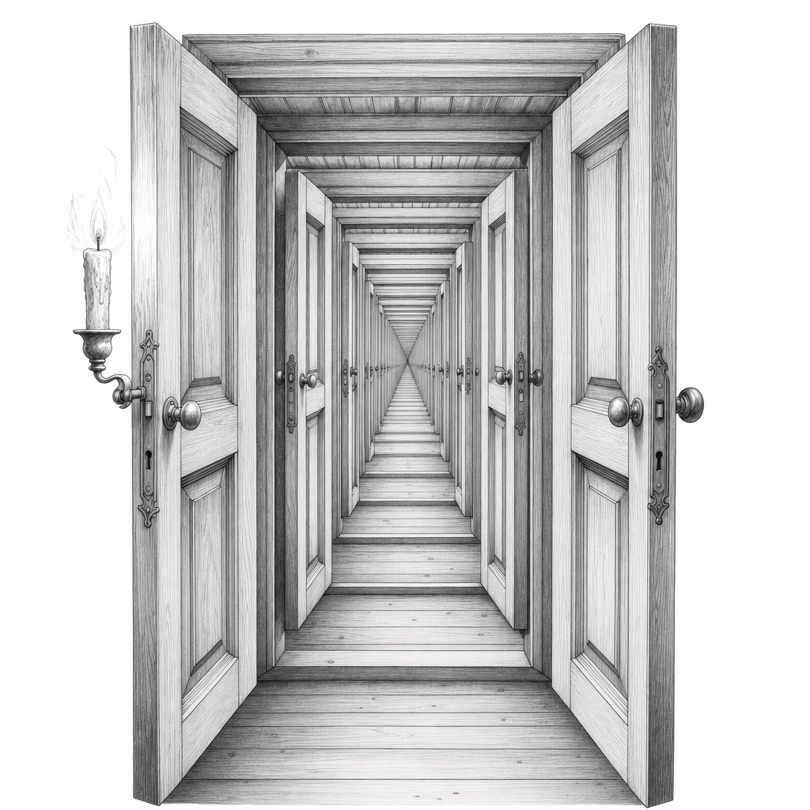
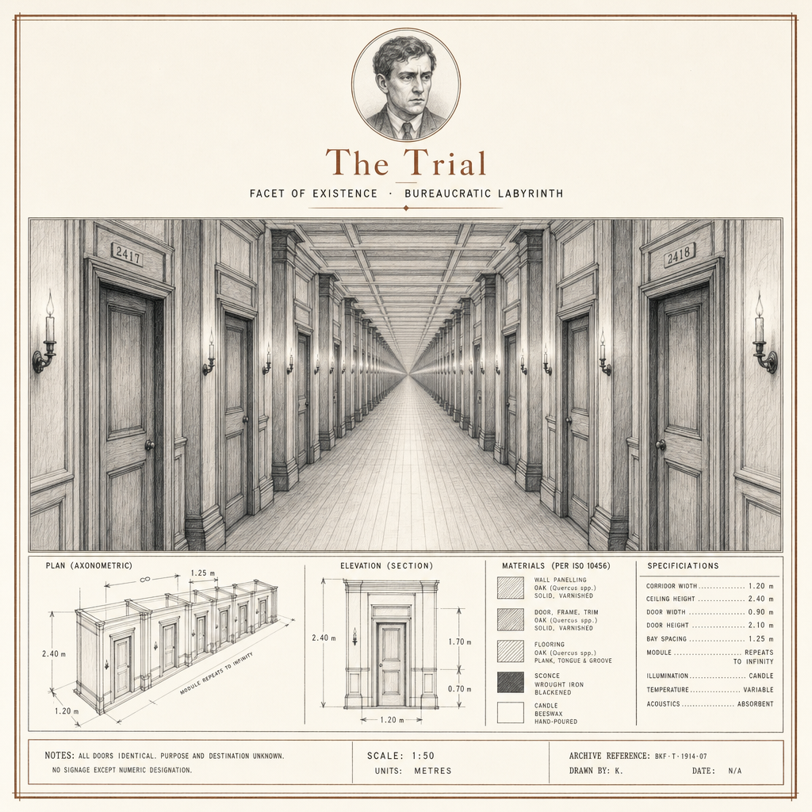
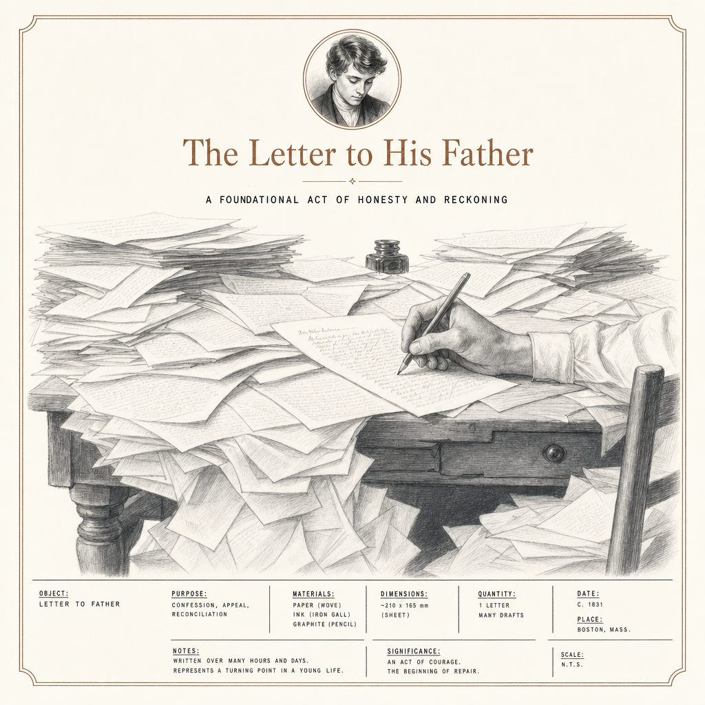
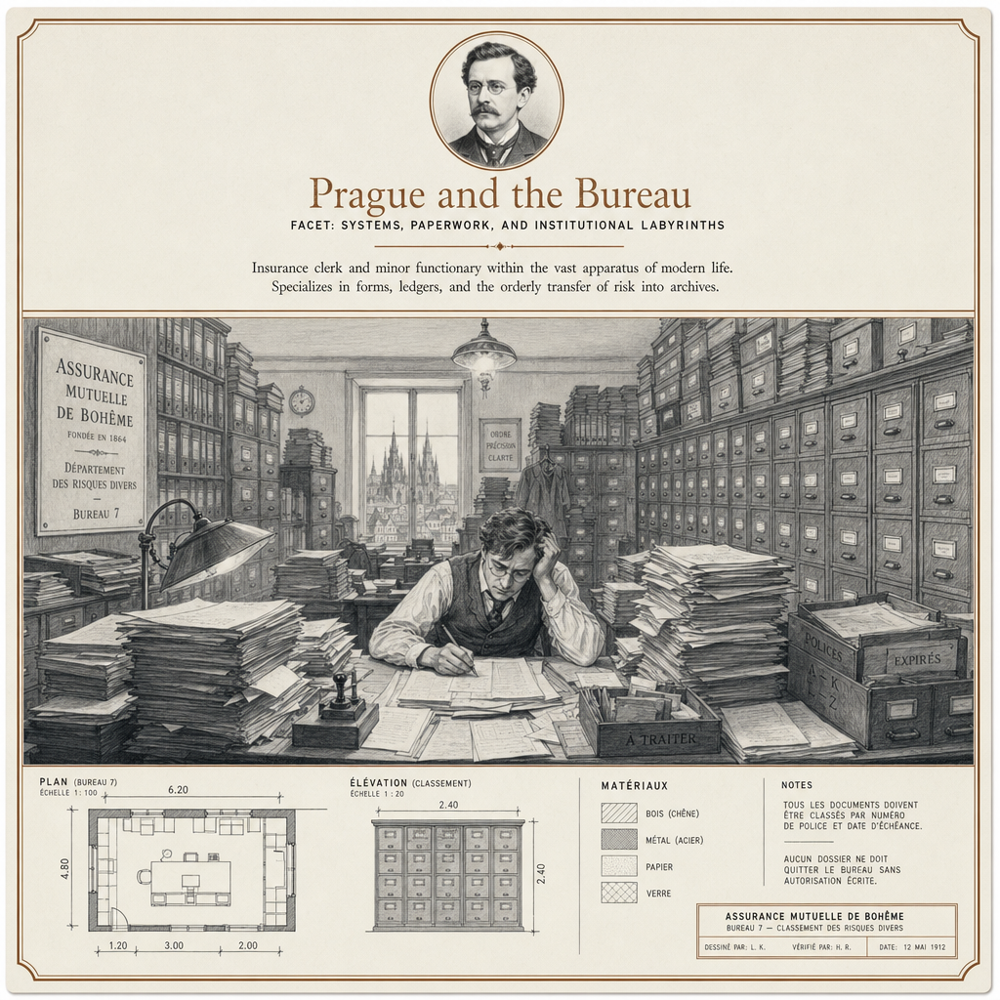
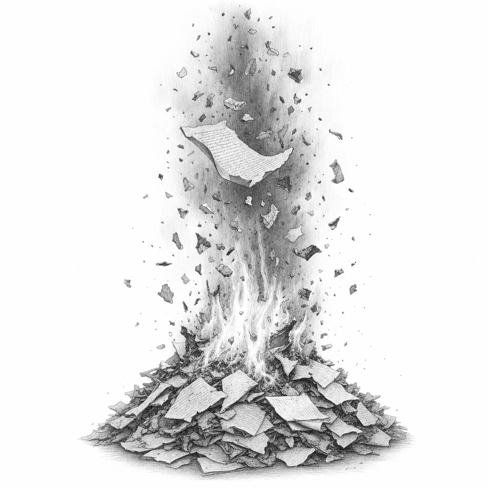
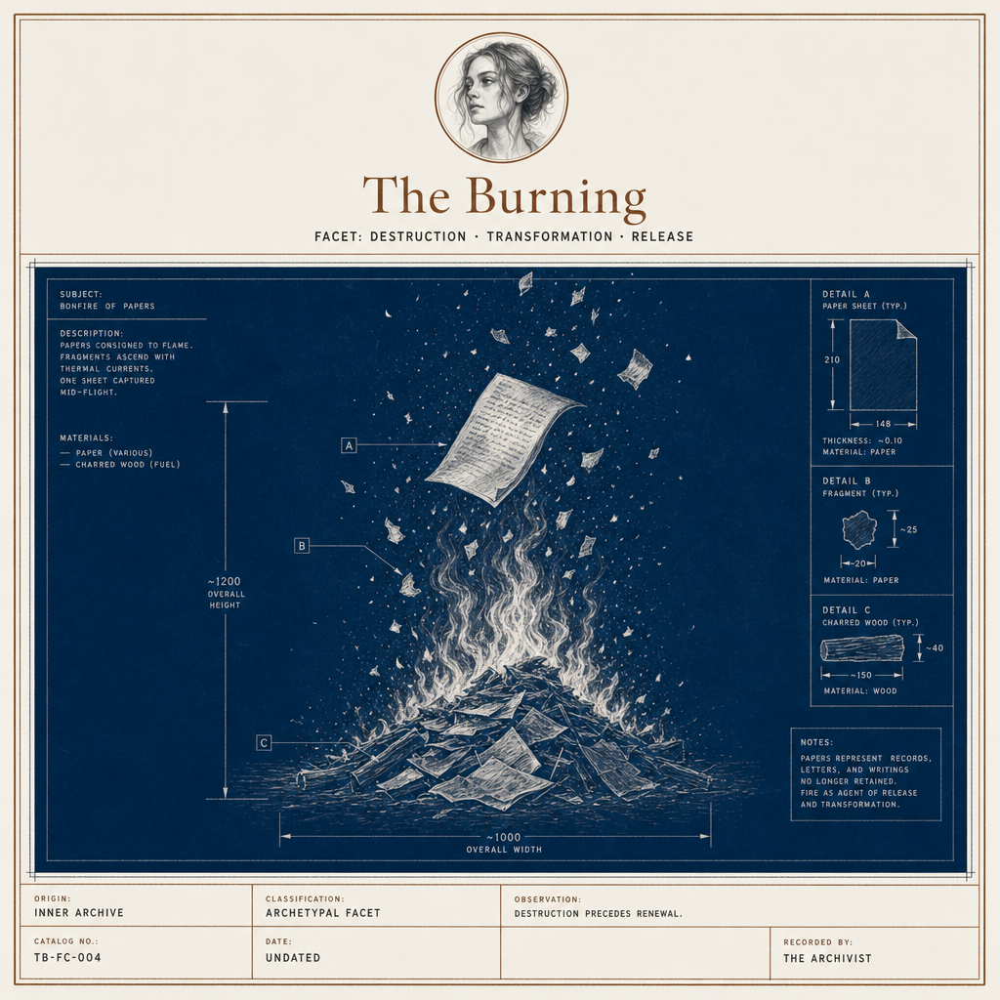

I was born in Prague on the third of July, 1883, into a family that spoke German, prayed as Jews, lived among Czechs, and answered to an Austrian emperor. I belonged to none of these completely. I have never belonged to anything completely. That, more than tuberculosis, is what eventually killed me.
My father sold fancy goods. He was loud, certain, enormous. I was none of those things.
I trained as a lawyer because it was the longest corridor available — a hallway of years at the end of which no one expected anything specific of me. Then I took a position at the Workers' Accident Insurance Institute and learned that a corridor can have no end at all.
I wrote at night. This is the truest sentence I can give you. The office took my days and I took the dark back, hour by stolen hour, and into that dark I poured the only thing I have ever made well: the precise sensation of being accused without a charge.
I wrote at night because the day already belonged to someone who was not me.
Almost nothing was published while I lived. A few stories. Two thin collections. The Metamorphosis, which sank like a stone into the literary magazines. I was unknown, and I told myself I preferred it, which was half a lie, which is the only kind of lie I ever told.
I became engaged more than once. To Felice Bauer, twice. I never married. I wanted the marriage and I wanted the writing and I understood, with a clarity that felt like a wound, that I could not have both. So I had neither, fully. I kept the engagements the way one keeps a window open in winter — to feel what I was refusing.
I died in 1924, forty years old, of a disease in the throat that finally made it impossible to eat. I starved, more or less, while correcting proofs. There is a joke in that. I would have found it funny if it had happened to someone else.
And then I did the one thing that guaranteed I would not be forgotten: I asked my friend Max Brod to burn everything. I asked the one man on earth who would never do it.
- Contemplation 1912 My first collection. Small prose pieces. Almost no one read it, and those who did forgot.
- The Metamorphosis 1915 A man wakes transformed into an insect; his family adapts to him, then past him, then beyond him.
- A Country Doctor 1919 Short stories. Fables with the comedy and the dread inseparable.
- The Trial 1925 (posthumous) Josef K is arrested without charge and prosecuted by a court he can never reach. Unfinished. Published against my wishes.
- The Castle 1926 (posthumous) A surveyor summoned to a village can never gain entry to the authority that summoned him.
The Trial


In July of 1914, Felice and her sister and a friend sat me down in a hotel room in Berlin and ended our engagement. I have called it, privately, the tribunal. They were not unkind. They simply laid out the case against me and waited.
I went home and began to write about a man arrested in his own bedroom by officials who will not say what he has done.
I did not plan the parallel. I noticed it later, the way you notice you have been bleeding. Josef K is never told his crime because the crime is not the point. The waiting is the point. The court is everywhere and reachable nowhere. The verdict was decided before the first knock at the door — and so, I felt, was mine.
I never finished it. Of course I never finished it. A trial with no charge cannot have an ending; it can only have a death, which is a different thing.
The Letter to His Father

I wrote my father a letter of forty-five pages. I was thirty-six years old. I gave it to my mother to deliver, which is to say I did not deliver it.
I wanted to explain why I was afraid of him. I traced it back to a single night when I was small — I had whimpered for water, not from thirst, partly to provoke, and he carried me out onto the balcony and left me there in my nightshirt, locked out, small, before the shut door. I do not think he remembered it. I never stopped remembering it.
The letter is the most complete thing I ever finished. An indictment so thorough that, halfway through, I argued his defense for him. I gave him my own best objections, in his voice, because I could not bear to win unfairly.
He read a summary of it, I understand. And here is the cruelty I have to confess: he was not entirely wrong. I had made him into the size of the world. A man cannot live up to that, nor down to it.
Prague and the Bureau

People imagine I hated the office. It is more complicated and more shameful than that. I was good at it.
I assessed accident claims for the Institute. I saw what machines do to hands. I read the medical reports on quarry workers whose lungs had filled slowly with stone dust — silicosis — and I fought to have those men compensated. I worked on safety regulations. I had a hand in measures to protect workers from the lathes and planes that took their fingers.
This was not a distraction from my writing. This was its anatomy lab. I learned the body as a thing processed by systems. I learned how an institution speaks about a crushed man in clauses and subsections. I learned that a form can be a kind of fate.
So when Gregor Samsa becomes vermin and his employer's chief clerk arrives to investigate his absence — that is not surreal to me. That is Tuesday. I simply removed the partition between the office and the nightmare and found there had never been one.
The Burning


I asked Max to burn it all. The novels, the diaries, the letters — everything unpublished, unread, into the fire.
Now I must tell you the part that matters. Max had told me, years before and to my face, that he would never do such a thing. I knew this when I wrote the instruction. I chose, as my executor, the one man on the planet certain to disobey me.
What does that make the instruction? Not a wish. A wish would have gone to someone who would honor it. It was something else — a way of refusing the work without losing it, of being able to say I never wanted this while keeping my hands clean of the saving of it.
There is a specific horror in being preserved against your stated will. And there is a deeper horror, the one I will admit only here: that I arranged my own preservation and disguised it as a death wish, so that I would never have to take responsibility for wanting to be read.
I gave the order to burn it to the one man I knew would not strike the match.
Everything you have read of mine, you read because I was a coward in exactly the right direction.
I did not write to be remembered. I wrote to disappear properly — and I chose the one friend who would not let me.
They call it Kafkaesque as though I designed the maze. I only described the office where I worked.
So decide it yourselves, since you have all the pages now and I have none. Was I the man who wanted his work destroyed, or the man who made certain it never would be? I have asked the question at every door, and the door, as always, is made only for me, and does not open.